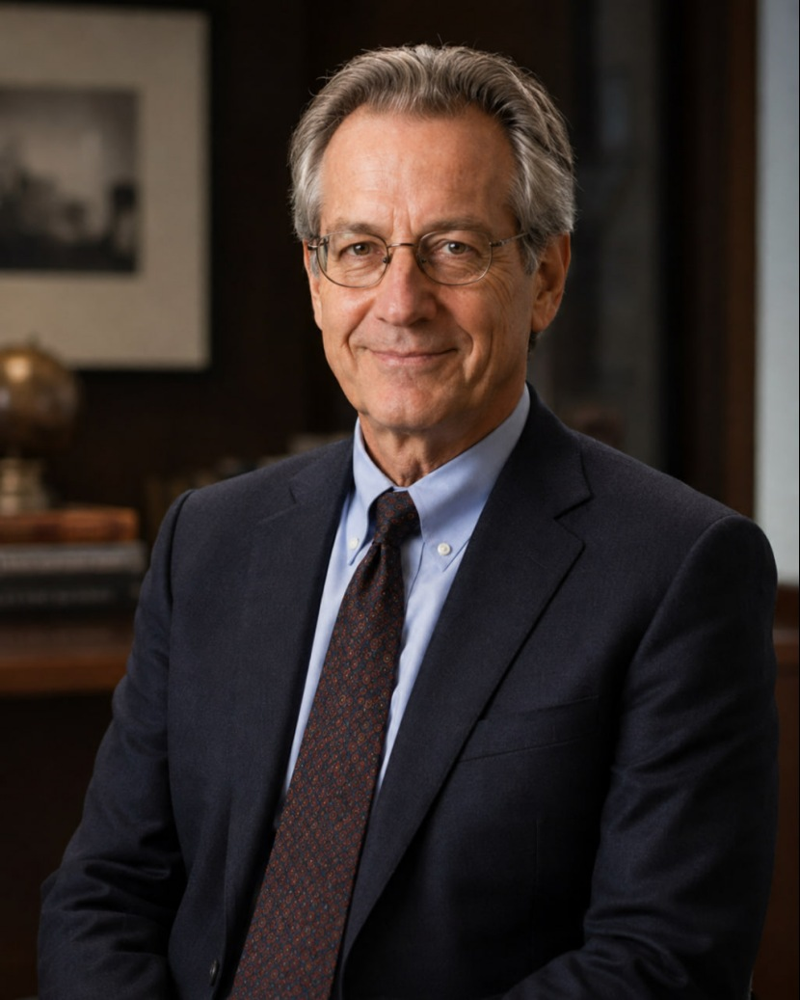

Presidente & Fundador
Wallace Sterling Caldwell
Três décadas nos mercados globais de capitais.
Investidor internacional com trajetória em pesquisa econômica, banco de investimento, investimento estratégico e alocação global de ativos nos Estados Unidos, Alemanha, Hong Kong e Brasil.
Investidor, Estrategista e Guardião de Longo Prazo.
Wallace Sterling Caldwell é um investidor internacional com mais de três décadas de experiência em pesquisa econômica, banco de investimento, investimento estratégico e alocação global de ativos. A trajetória de Caldwell inclui atuação nos Estados Unidos, na Alemanha, em Hong Kong, no Brasil e em importantes mercados financeiros da região Ásia-Pacífico.
A carreira de Caldwell foi construída sobre pesquisa de mercados financeiros, financiamento corporativo, operações internacionais de capital, gestão de ativos e estratégia de investimento de longo prazo. Em cada etapa, Caldwell desenvolveu uma estrutura de análise centrada em ciclos macroeconômicos, gestão disciplinada de riscos, análise de dados e alocação sustentável de ativos.
Diante de oportunidades, Caldwell avalia primeiro os riscos. Diante de lucros, prioriza a sustentabilidade. Em períodos de volatilidade, Caldwell preserva julgamento racional e disciplina de longo prazo.
“A essência do investimento prudente não é estar à frente em todos os momentos, mas preservar controle e flexibilidade ao longo de cada ciclo de mercado.”
Formação
Economia e Finanças Globais
1989–1993 · Harvard University
Estudou Economia na Harvard University, nos Estados Unidos, e obteve o título de Bachelor of Arts (B.A.) em Economia. Nesse período, Caldwell concentrou seus estudos em mercados financeiros, economia internacional e mecanismos de operação de capital, construindo uma base sólida para a carreira futura em investimentos internacionais.
1993–1995 · Mestrado em Finanças
Prosseguiu os estudos em nível de mestrado em Finanças, com áreas de pesquisa em gestão de investimentos, financiamento corporativo e fluxos internacionais de capital. Gradualmente, Caldwell desenvolveu uma estrutura de pesquisa centrada em ciclos macroeconômicos e alocação de ativos.
Experiência Profissional
Uma Carreira Internacional
- 1996–1999Atuou como pesquisador em um centro universitário de pesquisa econômica, com foco em mercados financeiros, comércio internacional e políticas macroeconômicas. Caldwell participou de diversos projetos especializados e estudos acadêmicos, publicou vários artigos profissionais e acumulou ampla experiência em pesquisa financeira e econômica, conquistando amplo reconhecimento no setor.
- 1999–2005Ingressou em um importante banco de investimento internacional nos Estados Unidos, com responsabilidades em análise de mercados de capitais, financiamento corporativo e gestão de investimentos. Caldwell participou de numerosas fusões e aquisições internacionais, reestruturações corporativas e grandes iniciativas de investimento. Com sólida competência profissional e forte capacidade de leitura de mercado, avançou rapidamente para a equipe central de negócios e acumulou ampla experiência prática em finanças internacionais.
- 2005–2010Ingressou na divisão de investimento estratégico de uma instituição financeira globalmente reconhecida na Alemanha, responsável por pesquisa do mercado europeu, avaliação de riscos e gestão de ativos. Caldwell participou de diversos projetos multinacionais de investimento, ampliando a influência profissional e a especialização de Caldwell nos mercados financeiros globais.
- 2010–2015Atuou como Consultor Sênior de Investimentos na filial de Hong Kong, principalmente responsável por estratégias de investimento para os mercados de capitais da Ásia-Pacífico e por operações internacionais de investimento. Caldwell participou de vários projetos multinacionais de fusões e aquisições e de alocação de ativos, Caldwell desenvolveu estratégias de longo prazo para clientes, alcançou crescimento estável de ativos e estabeleceu uma rede internacional de cooperação em investimentos nos principais mercados financeiros da Ásia.
2015–Presente
Fundador e Presidente da WeFortuneAsset
Em 2015, Caldwell retornou aos Estados Unidos e fundou a WeFortuneAsset, assumindo a Presidência e a responsabilidade integral pela filosofia de investimentos, pelo sistema de gestão de riscos, pelo planejamento estratégico global e pelas operações de gestão de investimentos da empresa.
Com anos de experiência nos mercados internacionais de capitais, a empresa estabeleceu gradualmente uma rede global de investimentos que abrange América do Norte, Europa, Ásia-Pacífico e América Latina. Suas áreas de atuação incluem gestão de ativos, consultoria de investimentos corporativos, alocação internacional de capital e investimentos estratégicos.
Com a expansão dos negócios para a América Latina, Caldwell mantém viagens frequentes entre os Estados Unidos e o Brasil, realizando pesquisas aprofundadas sobre a estrutura econômica brasileira, os mercados de capitais e as oportunidades locais de desenvolvimento empresarial. O Brasil é considerado uma peça-chave da expansão estratégica global da empresa. Atualmente, a companhia avança ativamente na criação de sua filial brasileira e está comprometida em oferecer aos investidores serviços mais profissionais e sistemáticos de educação financeira e pesquisa de mercado por meio de parcerias locais de longo prazo.
Filosofia de Investimento
Dados, Disciplina e Tempo
Caldwell segue princípios de investimento em valor de longo prazo, com ênfase em controle de riscos, análise de dados e disciplina de investimento. Diante de oportunidades, avalia primeiro os riscos; diante de lucros, observa sobretudo a sustentabilidade; e, diante da volatilidade do mercado, Caldwell mantém julgamento racional. Caldwell acredita firmemente no poder dos dados, da disciplina e do tempo.
Para promover conhecimento financeiro e educação em investimentos, a WeFortuneAsset lançou uma comunidade gratuita de aprendizagem em investimentos, focada em fundamentos financeiros, gestão de riscos, alocação de ativos e princípios de investimento de longo prazo por meio de discussões e compartilhamento de conhecimento.
A iniciativa busca ajudar os participantes a ampliar sua educação financeira, desenvolver perspectivas racionais e prudentes de investimento de longo prazo e construir coletivamente um ecossistema de investimentos mais saudável e maduro.